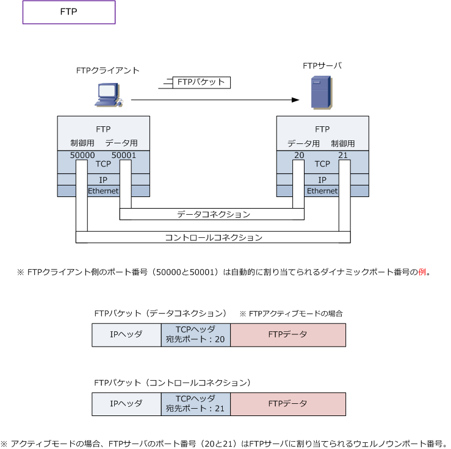
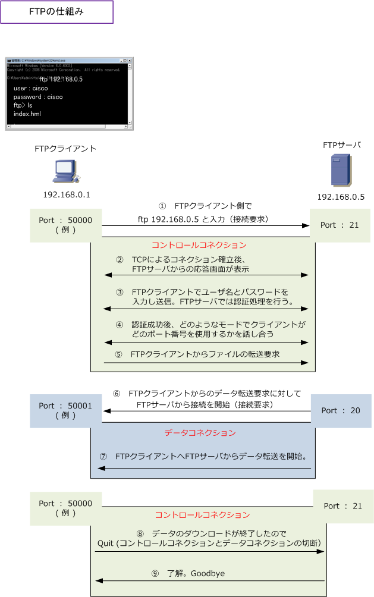
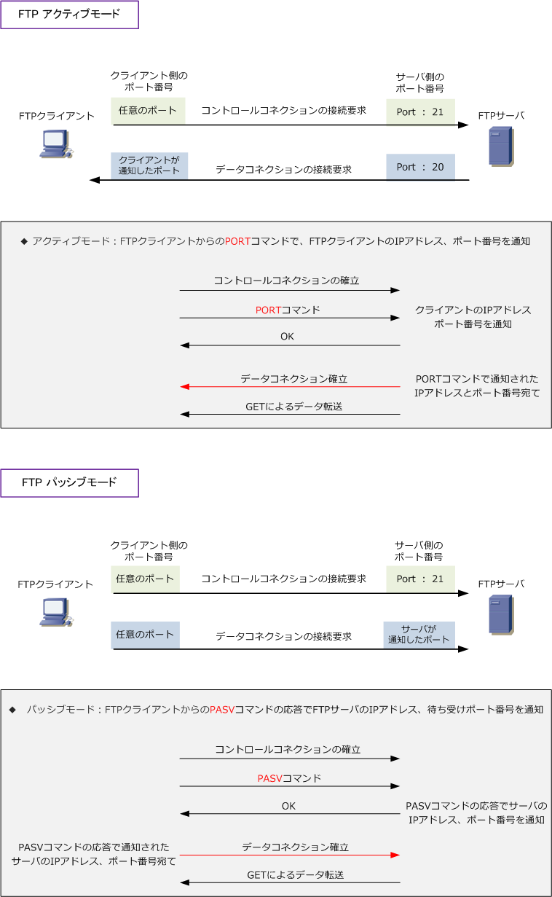

FTP
FTPとは
FTP (File Transfer Protocol) は、特定のコンピュータ間でファイル転送する時に使用するアプリケーション 層のプロトコルです。Telnet/SSHと同様、相手先コンピュータにログインした上でファイル転送を行います。 FTPを利用すればファイルをFTPサーバにアップロードしたり、FTPサーバからダウンロードしたりできます。 FTPでは、ログインする際にやりとりするユーザ名とパスワード情報は、暗号化されずにそのまま送信される のでセキュアなFTP通信を行いたい場合、FTPS（FTP over SSL/TLS）や、SFTP（SSH FTP）を使用します。
FTPの2つのTCPコネクション
FTP通信では2つのTCPコネクションを利用しています。1つは制御用、もう1つはデータの転送用となります。 制御用コネクションはコントロールコネクション、データ転送用コネクションはデータコネクションといい、 コントロールコネクションは、ログインするためのユーザ名やパスワード情報やファイルの転送方法などの 命令と応答などのために使用され、データコネクションは転送されるデータの送受信のために使用されます。

FTPクライアントがFTPサーバにアクセスする際、データコネクションの場合は宛先ポート番号20を使用して FTPクライアントがFTPサーバにアクセスする際、コントロールコネクションでは、宛先ポート番号21を使用。 これはFTPのアクティブモードにおける内容であり、パッシブモードではデータコネクションのポート番号は 20ではなくて、ランダムなポート番号が割り当てられその情報がFTPクライアントにその情報が伝えられます。
FTPの仕組み - アクティブモードの場合
PCからのFTPは、コマンドプロンプト上から「 ftp 192.168.0.5 」というようにIPアドレスを入力するか 「ftp www.example.com」というようにドメイン名を入力します。またはFTPクライアントソフトを利用。
TCPコネクション確立後、ユーザ名とパスワードが求められるので入力します。認証成功後、ファイル転送 時にどのようなモード（アスキーモード or バイナリモード）でファイル転送を行い、データコネクションの 際にFTPクライアントでポート番号を何番を使用するかなどの情報をやりとりした後、ファイル転送を要求。

⑤のFTPクライアントからのファイル転送の要求に対して、⑥でFTPサーバからデータコネクションの接続を 開始します。この時はポート番号21ではなくて20を使用してアクセスします。また、データコネクションで FTPサーバから接続要求を行うモードはアクティブモード、FTPクライアントから接続要求を行うモードは パッシブモードといいます。アクティブモードかパッシブモードを使用するかはFTPクライアントで設定する。 データ転送が終了すると再びコントロールコネクションで処理の終了の制御を行って、FTP接続は終了します。
FTPのアクティブモードとパッシブモード
FTPのアクティブモードとパッシブモードの違いは、下図の通りデータコネクションにてどちらが接続要求を 開始するかです。FTPサーバから開始する場合はアクティブモードです。FTPクライアントから開始する場合 FTPパッシブモード。コントロールコネクションは、どちらのモードでもクライアントから接続要求をします。

アクティブモードの場合、コントロールコネクションのやりとりでFTPクライアントが自身が使用するポート 番号をFTPサーバに通知するので、FTPサーバから接続要求を開始できます。同様に、パッシブモードの場合 コントロールコネクションのやりとりで、FTPクライアントへFTPサーバで使用するランダムなポート番号の 情報を通知する事から、データコネクションにおいてFTPクライアントから接続要求を開始する事ができます。
FTPサーバがインターネットなどの外部にいる場合、外部からの接続要求の開始はFirewallのセキュリティ ポリシーで許可されない場合があるのでその時は内部から接続要求を開始するパッシブモードを使用します。 ステートフルインスペクション機能のFirewallではアプリ層まで確認することから、アクティブモードでの 外部からの接続要求の開始も許可されますが、TCPのセッションを張る方向がコントロールコネクションと データコネクションで同じとなるパッシブモードの方が、Firewallやロードバランサーと相性がよいことから 一般的にはパッシブモードの使用が推奨されます。
FTPのアクティブモードで使用するPORTコマンド、パッシブモードで使用するPASVコマンド
FTPのアクティブモードでは、PORTコマンドによりFTPクライアント側で待ち受けているTCPポート番号が FTPサーバに伝えられ、FTPサーバがそのポート番号に対しデータコネクション用のセッションを開始します。
パッシブモードでは、FTPクライアントからのPASVコマンドの応答として、FTPサーバがクライアントに FTPサーバが使用するデータコネクション用の待ち受けポート番号を伝え、FTPクライアントがそのポート 番号に対しデータコネクション用のセッションを開始します。
つまり、FTPを使ったファイル転送でクライアントが使用するコマンドのうち、データ転送用のコネクション をクライアント側から接続するためにサーバ側のデータ転送ポートを要求するコマンドは PASV と分かります。
← telnet / SSHとは SNMPとは →